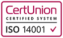

Tiszaújváros Transz Kft.
Alkotunk, átalakítunk, bérbeadjuk épületeinket, földmunkákat végzünk. Azt csináljuk, amit szeretünk, és amiben a legjobbak vagyunk.
.jpg)
Saját gépparkunk, emberi erőforrásunk, több évtizedre visszanyúló kapcsolatrendszerünk és megfontolt gazdaságpolitikánk tesz minket igazán erőssé az építőipari piacon. Az eddig elkészült munkáink állítanak emléket és fémjelzik azt az utat, amin a cégünk jár és aminek eredményeképp évről évre dinamikusan fejlődünk.
Mára cégünk egy jelentős kapacitással bíró, multinacionális vállalatok kiszolgálására is alkalmas vállalkozássá nőtte ki magát.
Telephelyeinket Borsod-Abaúj-Zemplén vármegye két, az iparban meghatározó városában, Miskolcon és Tiszaújvárosban üzemeltetjük. Megbízóinktól kapott bizalmat első osztályú munkával háláljuk meg. Rendszeresen dolgozunk az ország meghatározó vállalatainak. Több áru- és irodaházat építettünk a Hewlett-Packard, a BOSCH és a JYSK részére. Alkotunk, átalakítunk és földmunkákat végzünk. Azt csináljuk, amit szeretünk, és amiben a legjobbak vagyunk, hogy a lehető legjobbat nyújtsuk megrendelőinknek.
Vegye fel velünk a kapcsolatotMiskolcon és Tiszaújvárosban üzemeltetjük telephelyeinket — évtizedek tapasztalatai alapján, a piaci igényekhez igazodva építettük ki tevékenységeink körét.

1711/10 hrsz., 3700 Kazincbarcika

Borsod-Abaúj-Zemplén vármegye
Az eredményes gazdálkodás és a folyamatos fejlődés érdekében vállalkozásunk életében kiemelt szerepet kap a minőség és környezetpolitika, hogy hosszú távú és kifogástalan minőségű szolgáltatásokat nyújtsunk ügyfeleink számára. Társaságunk bevezette az ISO 9001 és ISO 14001-es minőségirányítási rendszert.
A Tiszaújváros Transz Kft. tudatos vállalatfejlesztési koncepciójába illesztve mindent megtesz azért, hogy az MSZ EN ISO 9001:2015 és MSZ EN ISO 14001:2015 szabványok szerinti integrált irányítási rendszerünk hatékonyságát a folyamatokban meghatározott szinten tartsuk, és folyamatosan tovább fejlesszük. Rendszerünk alapja a szolgáltatási folyamatok szabályozását tartalmazó dokumentációs rendszer, amelynek segítségével nő cégcsoportunk hatékonysága, az esetleges folyamatbeli ütközések kiszűrhetőek.
A tevékenységek megfelelő dokumentálása a folyamatok átláthatóságát teremti meg, mindemellett a minőségirányítási rendszert érintő összes kérdésben törekszünk arra, hogy a létrehozott struktúra legyen egyszerű, közérthető, világosan fogalmazza meg céljainkat és mindenki könnyen azonosulhasson a kitűzött feladatokkal.

Dolgozzunk együtt
Legyen szó ipari beruházásról, lakóépületről vagy infrastruktúra fejlesztésről — készen állunk.